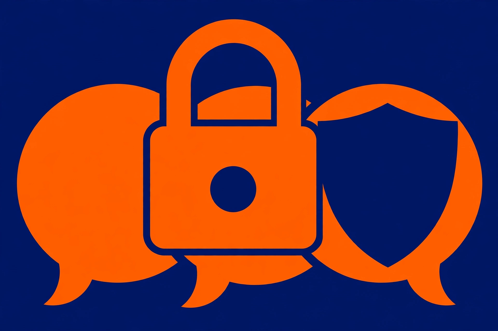

AI privacy for beginners: what not to share, and the settings that help

A chatbot feels like a private conversation. It is not one in the way a notebook on a desk is private. A chatbot is a service: what gets typed or uploaded is sent to that service, stored under its rules, and — depending on the settings — may be used to improve its models or read by human reviewers. Google says this plainly in its Gemini Apps Privacy Hub, warning people not to enter confidential information they would not want a reviewer to see. None of that is a reason to avoid chatbots. It is a reason to learn two skills: deciding what goes into a chat in the first place, and setting the few controls that change what happens afterwards. This guide covers both, in order.
The three-bucket rule: paste, edit first, or never share
Before sending anything, sort it into one of three buckets. This decision framework takes seconds and prevents almost every common privacy mistake:
- Paste as-is. The information is already public, or it would cause no harm if someone else saw it. A published article to summarize, a recipe to adapt, a paragraph of your own writing to polish — these belong here.
- Edit first, then paste. The material is useful to the chatbot but contains details it does not need. A work email with a client's name and account number, a household budget with real account balances, a contract with addresses — remove or replace the identifying details, then send the edited version.
- Never share. The information could cause serious harm if it were exposed or misused, and no edit makes it safe. The next section lists this bucket in full.
One tie-breaker covers every doubtful case: if there is genuine uncertainty about whether something is safe to upload or needs redacting first, the safer choice is not to upload it at all. A chatbot can almost always help with a cleaned-up version of the same question, asked with made-up names and rounded numbers.
What belongs in the never-share bucket
- Passwords and login codes. Never paste a password, PIN, or one-time code into a general-purpose chatbot. These are direct keys to accounts, and a chatbot never needs one to answer a question. Watch for them hiding in screenshots and error messages, too — a screenshot of a login problem can contain the very code that should stay private.
- Bank and payment details. Keep full bank account numbers, card numbers, and PINs out of chats. General money questions work fine with invented amounts: "a $400 monthly payment" teaches the same math as a real statement does.
- Government identification numbers. A passport number, driver's licence number, or national ID number is never needed for a chatbot to help. Combinations matter as well: a full name together with a home address and date of birth forms a trail worth protecting even though each item looks harmless alone.
- Confidential work material. Internal financial results, customer records, product plans, and other unreleased information should not go into AI services an employer has not approved. For anything work-related, use only the tools an employer permits, under its rules.
- Detailed personal health records. General health questions are one thing; a named diagnosis history, test results, or a medication list tied to a real person belongs in the never-share bucket for a general-purpose chatbot — and chatbot answers are not medical advice in any case.
- Other people's private information. Having access to someone's details does not make them yours to send. A document can contain information about many people at once — family members, customers, colleagues — and each of them has the same claim on privacy.
The hidden-details problem: screenshots, files, and photos
Most privacy slips do not happen in typed questions. They happen in attachments. A screenshot taken to show an error message may also show an account number in a tab, a name in a sidebar, or a one-time code in a notification. A spreadsheet uploaded for analysis may have a second tab with salary information. A photo of a form shows every field, including the ones the question is not about. The fix is a short pre-send pass, covered as a procedure below: open the file, look at every corner of it — not just the part the question concerns — and crop, cover, or delete anything that falls in the edit-first or never-share buckets before it leaves the device. Cropping a screenshot to the error message alone takes ten seconds and removes everything around it.
Step-by-step: make one chat safer before you send it
- Write the question in a notes app first, not directly in the chatbot. Drafting outside the chat makes editing a deliberate step instead of an afterthought.
- Scan the draft for names, addresses, dates of birth, account and ID numbers, and passwords or codes. Replace real names with roles ("my landlord", "a customer") and real amounts with close round numbers, unless the exact figure changes the answer.
- If attaching a file, screenshot, or photo, open it and inspect all of it: every tab of a spreadsheet, every corner of a screenshot, the background of a photo. Crop or cover anything sensitive, or export a copy with those parts removed.
- Ask whether the chatbot actually needs each remaining detail to help. If a detail does not change the answer, delete it. This single question — does it need this? — is the whole routine in miniature.
- For a genuinely sensitive one-off question, start a Temporary Chat in ChatGPT instead of a normal chat (see the settings section below for what that does and does not promise).
- Send, and save any useful answer outside the chat if it matters. Nothing in this routine requires keeping the original sensitive draft anywhere.
What success looks like: the sent message contains no password, code, ID or account number, no real person's full identifying details, and no attachment that has not been visually checked end to end — while still containing everything the chatbot needs to give a useful answer.
The settings that actually change what happens to your chats
Four ideas are often tangled together, and untangling them makes the settings screens make sense. Training is whether chats can be used to improve the provider's models. History is whether chats are saved in an account for later viewing. Memory is whether the chatbot carries facts from one chat into future chats. Human review is whether trained reviewers may read some chats. OpenAI states explicitly that its memory controls and its model-training controls are separate settings — changing one does not change the other.
ChatGPT — turn off model training. OpenAI's Data Controls FAQ gives this path on the web: open the profile menu, choose Settings, then Data Controls, and turn off "Improve the model for everyone". On mobile, the path runs through the sidebar and profile icon to Data Controls. With the setting off, new conversations are not used to train OpenAI's models, though they can still appear in chat history. When signed in, the choice applies to the whole account across devices.
ChatGPT — Temporary Chat for one-offs. Temporary Chats do not appear in chat history, do not create or update memories, and are not used to improve OpenAI's models. They may still be retained for up to 30 days for safety purposes, so temporary means less exposed, not secret.
Gemini — Keep Activity. Google's Privacy Hub explains that with the Keep Activity setting on, chats and anything shared with Gemini — files, photos, screens — are saved in Gemini Apps activity, and that activity is used to provide, develop, and improve Google's services, including training its generative AI models, with help from human reviewers. Activity auto-deletes after 18 months by default, and that period can be changed to 3 or 36 months, or switched off; activity can also be reviewed and deleted manually at any time in Gemini Apps activity.
What the settings cannot do
- They do not rewind the past. Turning off training in ChatGPT does not delete saved chats — OpenAI is explicit that chats are deleted separately, by deleting the chat or the account. Settings govern what happens next, not what already happened.
- Feedback can reopen the door. In ChatGPT, submitting a thumbs-up or thumbs-down on a response can allow the entire conversation attached to that feedback to be used for training, even after opting out of training generally. Skip the feedback buttons on sensitive chats.
- Reviewed chats follow different rules in Gemini. Google states that chats reviewed by human reviewers are disconnected from the account and kept for up to three years, and are not removed when a user deletes their activity.
- No setting makes a chat a diary. Every control above reduces exposure; none turns a cloud service into a private notebook. The never-share bucket stays never-share regardless of settings.
One exception worth knowing: for managed workspaces, OpenAI states that by default it does not use content from ChatGPT Business, Enterprise, Edu, or Healthcare workspaces to train its models. Work accounts and personal accounts follow different defaults — another reason to keep work material in work-approved tools.
FAQ
Is it safe to ask a chatbot general questions? Yes — everyday questions that contain no identifying or confidential details sit squarely in the paste-as-is bucket. Privacy problems come from the details people add, not from asking questions at all.
Does deleting a chat erase it everywhere? Deleting is the right step, but the honest answer is "mostly, and on the provider's timetable". Read the deletion section of the specific service's privacy page before relying on it for something truly sensitive — and remember the Gemini exception for already-reviewed chats above.
Which single change helps most? The habit, not a setting: run the three-bucket sort before sending. After that, turning off model training in ChatGPT or reviewing Keep Activity in Gemini takes about a minute each and covers the training question for future chats.